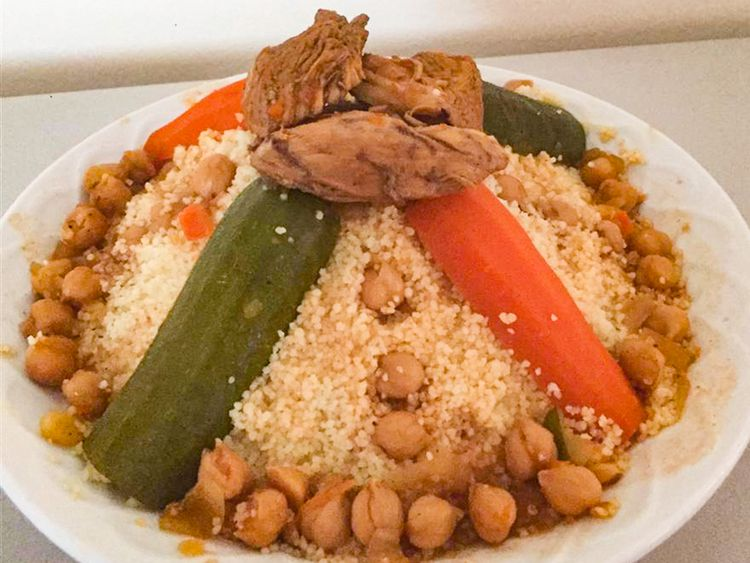

Algerian Couscous
Home

Description
This recipe is made with mutton and chicken, but you can easily change the meats for
lamb and/or merguez. I make this often and my family loves it!
Ingredients
- ¼ cup olive oil, or more as needed, divided
- 8 mutton chops, fat removed
- 4 chicken drumsticks
- 1 pinch salt and ground black pepper to taste
- 3 onions, quartered
- water to cover
- 2 tablespoons ground turmeric
- 2 tablespoons ground cumin
- 2 tablespoons ground coriander
- 3 potatoes, cut into chunks
- 3 turnips, cut into chunks
- 3 carrots, sliced lengthwise and cut into chunks
- 1 (6 ounce) can tomato paste
- 2 tablespoons ras el hanout
- 1 (7 ounce) can chickpeas, drained
- 2 zucchini, sliced lengthwise and cut into chunks
- 5 sprigs cilantro, chopped
Couscous:
- 3 cups water
- 2 cups couscous
- 1 tablespoon butter
- 3 tablespoons harissa
Steps
- Heat 3 tablespoons olive oil in a large pot over medium-high heat. Season mutton
chops and chicken drumsticks with salt and pepper; cook in batches with onions in
the hot oil until browned, about 2 minutes per side. Transfer to a large plate.
- Scrape the bottom of the pot with a wooden spoon to release browned bits. Return
mutton chops and chicken to the pot. Pour in enough water to cover; add turmeric,
cumin, and coriander. Cover and bring to a boil. Reduce heat to medium;
simmer for 20 minutes.
- Stir potatoes, turnips, and carrots into the pot. Simmer, covered, until vegetables
start to soften, about 10 minutes. Mix in tomato paste and ras el hanout; cook
for 10 minutes. Stir in chickpeas, zucchini, and cilantro; continue cooking, covered,
until zucchini is tender, about 5 minutes.
- Bring 3 cups water to a boil in a saucepan; remove from heat and stir in couscous
and butter. Cover saucepan and let stand until water is absorbed completely, 5 to 10
minutes. Fluff couscous with a fork and stir in 1 tablespoon olive oil. Transfer
to a serving dish.
- Ladle 2 scoops of cooking liquid into a bowl; mix in harissa until smooth.
- Scoop vegetables onto a serving plate. Scoop mutton and chicken onto a separate plate.
Serve alongside couscous, harissa sauce, and remaining cooking liquid in the pot.